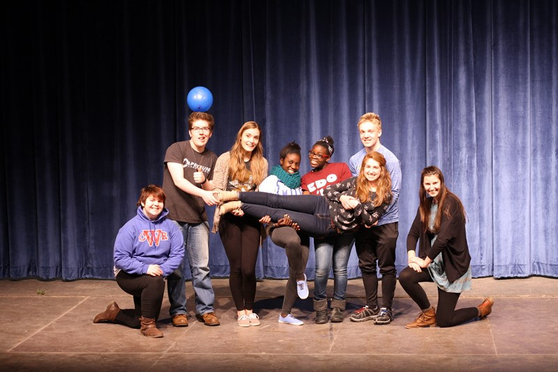

Clubs At Washington High School
The Video Game Club
The Video Game Club is sponsored by Mr. Wood and has Ultimate and Rank One members.

Take Charge (SADD)
Take Charge was formerly known as Students Against Drunk Driving and is currently looking for a sponsor for 2017.
The Surveyor
The Surveyor is a as a school-sponsored designated forum dedicated to informing and entertaining its readers.